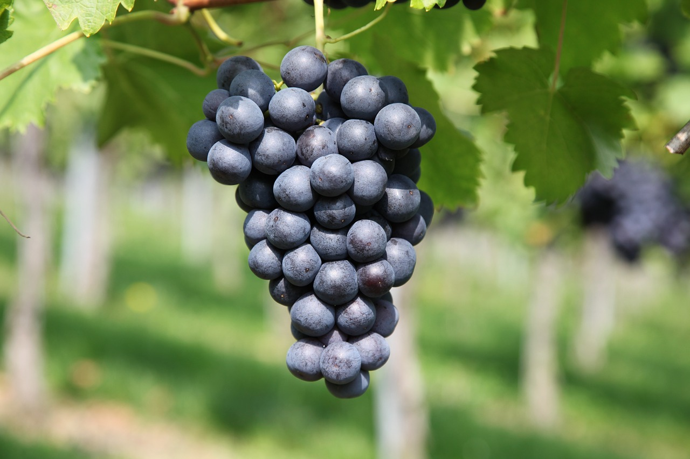

A uva é uma fruta rica em resveratrol, um composto bioativo com propriedades antioxidantes, anti-inflamatórias e cardioprotetoras, sendo encontrado principalmente nas cascas, folhas e sementes dessa fruta, estando em maior quantidade nas uvas de cor roxa e vermelha. Já a uva verde contém principalmente a clorofila, que é um pigmento natural que também possui ação anti-inflamatória e antioxidante.
Por sua ação antioxidante e anti-inflamatória, a uva protege as células do corpo contra os danos causados pelos radicais livres, promovendo diversos benefícios à saúde, como evitar o surgimento do câncer, diminuir os níveis de triglicerídeos colesterol “ruim”, o LDL, no sangue, e evitar doenças cardiovasculares, por exemplo.
As uvas variam entre a cor roxa, vermelha e verde, no entanto, apesar da uva vermelha e roxa terem mais resveratrol que a verde, os outros nutrientes são muito similares. A uva pode ser consumida ao natural, com casca e semente, ou ainda pode ser usada em preparações, como sucos, doces, saladas, picolés, geleias, gelatinas, mousses e na fabricação de vinhos.
Os principais benefícios da Uva
- 1. Prevenir o surgimento do câncer: Por ser rica em resveratrol, ácidos fenólicos, clorofila e flavonoides, que são compostos bioativos com propriedades antioxidantes, a uva protege as células saudáveis do corpo contra os radicais livres, prevenindo, assim, o surgimento de alguns tipos de câncer, como de mama, de próstata e de pele.
- 2. Combater a prisão de ventre: A uva, principalmente quando consumida com cascas e sementes, ajuda a combater a prisão de ventre, porque contém fibras que aumentam o volume das fezes e promovem os movimentos naturais do intestino, facilitando a eliminação das fezes.
- 3. Diminuir o colesterol “ruim”, LDL: Os taninos e as antocianinas, presentes em maior quantidade na uva roxa, e a clorofila, presente na uva verde, são compostos bioativos com ação antioxidante que combatem os radicais livres, evitando a oxidação das células de gordura, diminuindo, assim, os níveis de colesterol “ruim”, o LDL, e triglicerídeos no sangue. Além disso, as antocianinas da uva também aumentam os níveis de colesterol “bom”, o HDL, no sangue, um tipo de gordura que evita a coagulação do sangue e elimina o excesso de gorduras do organismo, protegendo contra doenças, como infarto, trombose e derrame, por exemplo.
- 4. Prevenir a diabetes: Apesar de a uva ter boas quantidades de carboidratos, a fruta, principalmente quando consumida na forma natural e com casca, possui de baixo a médio índice glicêmico, o que ajuda a controlar os níveis de glicose no sangue, ajudando a prevenir a resistência à insulina e a diabetes. Além disso, a uva também contém compostos fenólicos com ação antioxidante, que protegem as células do pâncreas responsáveis pela produção da insulina e melhoram as funções desse hormônio, ajudando, assim, a controlar os níveis de glicose no sangue.
- 5. Melhorar a memória e o humor: Por conter ótimas quantidades de resveratrol, um composto bioativo com ação antioxidante e anti-inflamatória, a uva ajuda a combater os radicais livres, melhorar a circulação de sangue e diminuir a inflamação no cérebro, melhorando, assim, a memória e o humor.
- 6. Manter a saúde dos ossos: A uva tem boas quantidades de vitamina K, uma vitamina importante para aumentar a fixação de cálcio nos ossos, ajudando na prevenção da osteoporose. Além disso, a uva também contém potássio, um mineral que neutraliza o excesso de ácidos no organismo, equilibrando o pH e diminuindo a perda de cálcio pela urina. Veja uma lista de alimentos com potássio.
- 7. Controlar a pressão arterial Por ser rica em compostos fenólicos, a uva tem propriedades cardioprotetoras, que mantêm saúde dos vasos sanguíneos, melhoram o relaxamento das artérias e facilitam a circulação de sangue, ajudando no controle da pressão arterial e evitando o surgimento da pressão alta.
- 8. Preservar a saúde dos olhos: A uva contém luteína e zeaxantina, carotenoides com ação antioxidante, que protegem os olhos contra os raios ultravioleta do sol e contra a luz azul de dispositivos, como celular e computador, evitando o risco do desenvolvimento de catarata e degeneração macular, uma doença que diminui a capacidade da visão com o avançar da idade. Além disso, a uva contém resveratrol, um composto com propriedades antioxidantes e anti-inflamatórias, combatendo os danos causados pelos radicais livres às células dos olhos, ajudando a prevenir o surgimento do glaucoma e evitar a piora da doença.
Tabela de informação nutricional
A tabela a seguir traz a composição nutricional de 100 g de 2 tipos de Uva
| Componentes | 100 g de uva roxa | 100 g de uva vermelha |
| Energia | 83 calorias | 49 calorias |
| Carboidratos | 18,6 g | 12,7 g |
| Proteínas | 0,3 g | 0,6 g |
| Gorduras | 0,5 g | 0,2 g |
| Fibras | 0,9 g | 0,9 g |
| Vitamina C | 1 mg | 1,9 mg | Fósforo | 11 mg | 23 mg |
| Potássio | 220 mg | 159 mg |
| Cálcio | 10 mg | 8 mg |
| Magnésio | 8 mg | 6 mg |